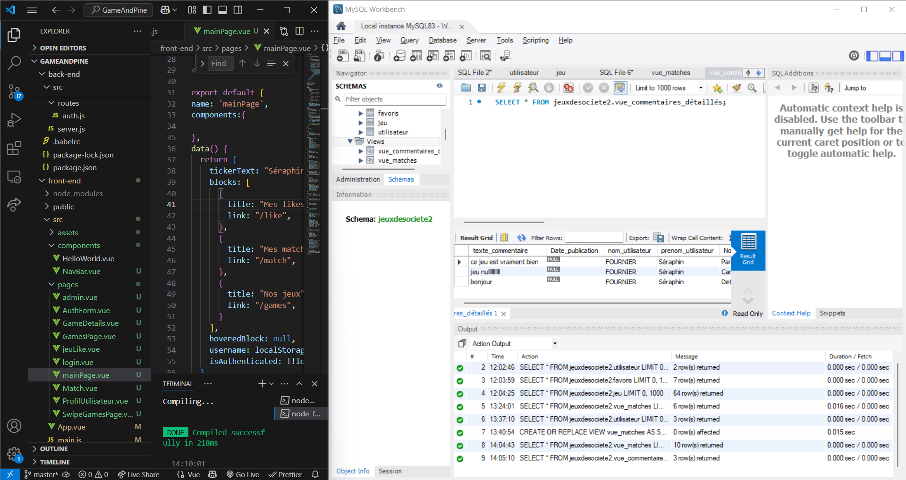
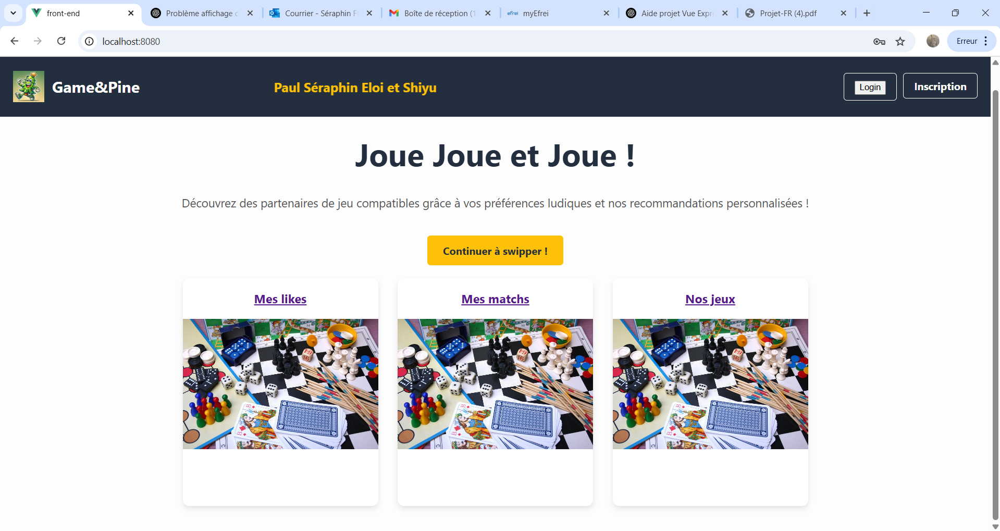
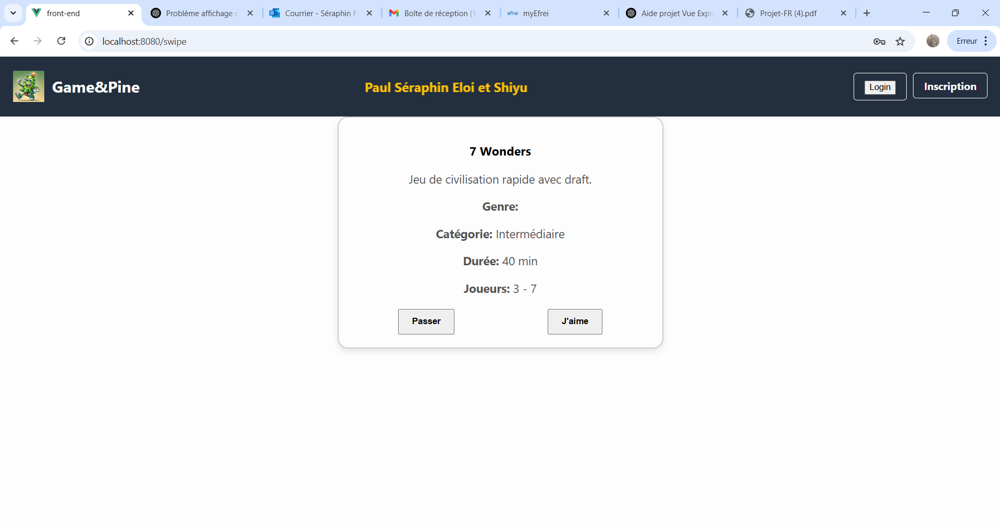

This academic project is based on an interactive web application, connected in real time to a local database. Its goal is to assess and connect board game enthusiasts. Using a proprietary algorithm, the app compares each user's preferences to the data in our catalog to suggest targeted matches, much like a playful matchmaking platform. All features are fully functional: creation and management of multiple accounts, an admin interface to oversee users and content, game addition/removal, comment moderation, and a like/dislike system. By combining these elements, the application offers a smooth and personalized experience, making it easier to discover like-minded gaming partners.
Project: Game&Pine
Project Objective:
Visual Demonstration



Algorithm Structure
Function match_users(userA_id, userB_id)
// 1. Connect to the database
conn ← open_DB_connection(host, user, password, DB_name)
// 2. Retrieve liked games for each user
gamesA ← execute_query(
conn,
"SELECT game_id FROM preferences WHERE user_id = ?", userA_id
)
gamesB ← execute_query(
conn,
"SELECT game_id FROM preferences WHERE user_id = ?", userB_id
)
// 3. Compute intersection
common_games ← INTERSECT(gamesA, gamesB)
// 4. Match decision
If common_games is not empty
display("Match found! Shared games:", common_games)
Else
display("No match: no shared games.")
End If
// 5. Close the connection
close_DB_connection(conn)
End Function